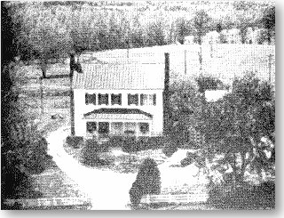

BONNEVILLE, DINWIDDIE CO., VIRGINIA
Home of John Pegram [1748 - 1814]
 |
"Bonneville" of late Georgian architecture and Flemish bond
chimneys, features 3880 sq. ft. living area including large rooms, high ceiling, spacious
halway used as sitting room, 5 bedrooms, 4 firplaces, 2 kitchens, pine floors, portions of
which are original and English basement, partially finished. The doors have six
sections, forming a cross to keep out witches, a superstition, also used in other Manor
Houses of the Area." Old Virginia Houses Along the Fall Line, p. 506 |